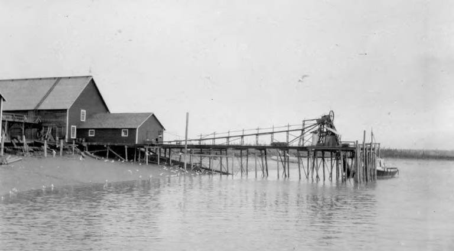
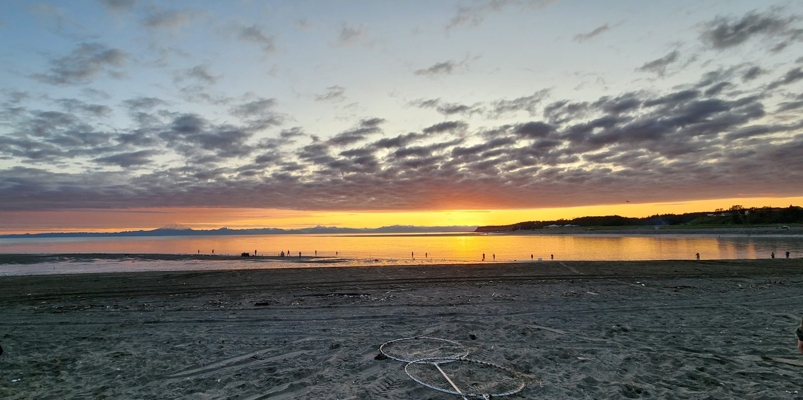

Directory / Southcentral Alaska / Kenai, AK
Kenai tides — Kenai City Pier, City Dock & the river mouth
High and low tides for the coming week from NOAA station 9455742 (Kenai City Pier — 60.545, -151.218), near the City of Kenai Dock about 1.5 miles up the Kenai River from Cook Inlet. Times are local (AKST/AKDT). Heights are feet above Mean Lower Low Water (MLLW). Kenai sits on the bluff where the Kenai River meets upper Cook Inlet, across the water from the Redoubt and Iliamna volcanoes. Old Town Kenai began as the Dena’ina village of Shk’ituk’t and later a Russian redoubt. Kenai has no slip harbor. Boats run off trailers at the city launch and river docks, and the river mouth fills each summer with drift-netters, set-netters, and the July personal-use dipnet fishery.
Tide, ramp & the Kenai River bar
No water, no launch. The City of Kenai’s City Dock brochure says it plainly: “When the tide is low, launching is not possible and the line for launching comes to a halt until the tide rises.” During commercial openings, commercial boats get the ramp first. The concrete dock floats are for business use only. A 24-hour no-wake zone covers the waters around the City Dock and river miles 3–5. Plan launch and retrieval around the high water in the table below.
Kenai tides follow Seldovia. NOAA computes 9455742 as a subordinate station from Seldovia (9455500). Highs run about 1 h 54 min later and lows about 2 h 55 min later than at Seldovia, so the Kenai ebb runs about an hour longer, and the flood about an hour shorter, than at Seldovia. In the NOAA predictions fetched 2026-11-11, the biggest swing in the next five weeks comes on Wednesday, November 25, 2026: a 24.2 ft high at 4:09 PM followed by a −4.7 ft low at 11:49 PM, a drop of about 28.9 ft. Night-time minus tides (late evening or just after midnight) run every night from Nov 22 to Nov 30, and again Dec 6–12.
Upper Cook Inlet weather. Kenai’s waters fall in NWS zone PKZ740 Cook Inlet North of Kalgin Island. South of Kalgin Island, toward Kasilof and Ninilchik, the zone is PKZ742. The forecast issued 2:42 PM AKST Wed Nov 11, 2026 had a Small Craft Advisory tonight for PKZ740, with NE wind rising to 25 kt and seas building to 5 ft overnight.
Computed from NOAA CO-OPS hi/lo predictions for 9455742 (2026-11-12 through 2026-12-17), NOAA MDAPI subordinate-station offsets, the NWS coastal waters forecast text and api.weather.gov active alerts, and the City of Kenai Dock brochure, all fetched 2026-11-11 AKST. Not for navigation.
Kenai then & now
Historic

.jpg){kind=link}
Current

.jpg){kind=link}
Official NOAA predictions Station home NOAA chart viewer View on Windy
Port Sponsor — Kenai, AK
Top placement for fuel docks, marinas, yards, and marine businesses.
$25–$50 / month
Saturday, November 14, 2026
| Tide | Time (local) | Height (MLLW) |
|---|---|---|
| Low | 1:42 AM | 1.2 ft |
| High | 7:24 AM | 17.2 ft |
| Low | 1:52 PM | 6.9 ft |
| High | 6:37 PM | 18.1 ft |
Sunday, November 15, 2026
| Tide | Time (local) | Height (MLLW) |
|---|---|---|
| Low | 2:25 AM | 2.4 ft |
| High | 8:16 AM | 16.3 ft |
| Low | 2:43 PM | 7.7 ft |
| High | 7:24 PM | 16.8 ft |
Monday, November 16, 2026
| Tide | Time (local) | Height (MLLW) |
|---|---|---|
| Low | 3:16 AM | 3.5 ft |
| High | 9:15 AM | 15.8 ft |
| Low | 3:48 PM | 8.1 ft |
| High | 8:27 PM | 15.6 ft |
Tuesday, November 17, 2026
| Tide | Time (local) | Height (MLLW) |
|---|---|---|
| Low | 4:16 AM | 4.3 ft |
| High | 10:19 AM | 15.9 ft |
| Low | 5:07 PM | 7.8 ft |
| High | 9:49 PM | 14.9 ft |
Wednesday, November 18, 2026
| Tide | Time (local) | Height (MLLW) |
|---|---|---|
| Low | 5:23 AM | 4.7 ft |
| High | 11:17 AM | 16.5 ft |
| Low | 6:24 PM | 6.6 ft |
| High | 11:15 PM | 15.0 ft |
Thursday, November 19, 2026
| Tide | Time (local) | Height (MLLW) |
|---|---|---|
| Low | 6:28 AM | 4.8 ft |
| High | 12:05 PM | 17.6 ft |
| Low | 7:26 PM | 4.8 ft |
Friday, November 20, 2026
| Tide | Time (local) | Height (MLLW) |
|---|---|---|
| High | 12:26 AM | 15.9 ft |
| Low | 7:23 AM | 4.5 ft |
| High | 12:45 PM | 18.9 ft |
| Low | 8:14 PM | 2.6 ft |
Saturday, November 21, 2026
| Tide | Time (local) | Height (MLLW) |
|---|---|---|
| High | 1:24 AM | 17.2 ft |
| Low | 8:12 AM | 4.0 ft |
| High | 1:23 PM | 20.4 ft |
| Low | 8:57 PM | 0.4 ft |
Tide data: NOAA CO-OPS station 9455742 (Kenai City Pier), predictions (hi/lo, MLLW, local standard/daylight time). This is a subordinate station referenced to Seldovia 9455500. Refreshed with each nightly build; the marine-weather snapshot time below shows the latest fetch. Currents: NOAA current station PCT5016 (Kenai City Wharf, about 1.5 km away) — NOAA current predictions.
Marine weather & cameras
NWS marine forecast — Cook Inlet North of Kalgin Island (PKZ740)
Issued 158 PM AKST Fri Nov 13 2026. Snapshot fetched 2026-11-13 21:17 AKST from NWS text product. Official zone forecast · Raw text
- .TONIGHT...NE wind 15 kt diminishing to 10 kt after midnight. Seas 2 ft.
- .SAT...Variable wind less than 10 kt becoming NE 10 kt in the afternoon. Seas 1 ft.
- .SAT NIGHT...Variable wind less than 10 kt becoming NE 10 kt after midnight. Seas 1 ft.
- .SUN...N wind 10 kt. Seas 2 ft.
- .SUN NIGHT...NE wind 15 kt. Seas 3 ft.
- .MON THROUGH TUE...NE wind 10 kt. Seas 3 ft.
- .WED...NE wind 25 kt. Seas 7 ft.
NWS marine forecast — Cook Inlet Kalgin Island to Point Bede (PKZ742)
Issued 158 PM AKST Fri Nov 13 2026. Snapshot fetched 2026-11-13 21:17 AKST from NWS text product. Official zone forecast · Raw text
- .TONIGHT...N wind 20 kt. Seas 4 ft.
- .SAT...N wind 10 kt increasing to 15 kt in the afternoon. Seas 3 ft.
- .SAT NIGHT...N wind 15 kt. Seas 3 ft.
- .SUN...N wind 10 kt. Seas 3 ft.
- .SUN NIGHT...N wind 25 kt. Seas 6 ft.
- .MON...N wind 15 kt. Seas 3 ft.
- .TUE...N wind 20 kt. Seas 4 ft.
- .WED...NE wind 30 kt. Seas 7 ft.
Nearby NDBC observation — Kenai (KNXA2, Marine Exchange of Alaska)
wind 20°, 3 kt, gust 4 kt, air 28°F, 988.5 hPa
Observation time 2026-11-13 21:02 AKST (converted to AKST). Attribution: NOAA NDBC station KNXA2. Snapshot fetched 2026-11-13 21:17 AKST.
Nearby NDBC observation — Nikiski (NKTA2, NOAA 9455760)
wind 30°, 6 kt, gust 7 kt
Observation time 2026-11-13 20:48 AKST (converted to AKST). Attribution: NOAA NDBC station NKTA2. Snapshot fetched 2026-11-13 21:17 AKST.
Nearby NDBC observation — Lower Cook Inlet buoy (46108, Alaska Ocean Observing System)
seas 1.3 ft, water 46°F
Observation time 2026-11-13 20:30 AKST (converted to AKST). Attribution: NOAA NDBC station 46108. Snapshot fetched 2026-11-13 21:17 AKST.
Harbor webcams
- City of Kenai — City Dock boat launch camera (free public live view of the ramp; link only, not embedded or rehosted)
- City of Kenai — Dock Road camera and Dock parking lot camera (free public; link only)
- City of Kenai — all dipnet cameras (North Beach, South Beach, and river-mouth views; free public page from the city; link only)
- FAA WeatherCams — Kenai Municipal (PAEN) (free public link; three views; may be dark in winter; not embedded)
Kenai boater notes (official links)
- City of Kenai — City Dock: 4 launch ramps, 238 trailer parking spaces, fees, and commercial dock information (the 3 dock cranes are not open to the public). Dock line 907-283-8261.
- City Dock brochure (PDF): low-tide launch limits, the no-wake zone, retrieval lanes, and agency phone numbers.
- City of Kenai personal-use dipnet information (season July 10–31; Alaska residents with a permit).
- ADF&G personal use fishing and ADF&G fish counts (Kenai River sonar estimates in season).
- Alaska State Parks — Eagle Rock Boat Launch (Kenai River Special Management Area; annual passes not accepted).
- City of Kenai contacts: the city has no harbormaster. City Dock questions go to Public Works (Director Lee Frey, 907-283-8240), who is also staff liaison to the Kenai Harbor Commission.
- NOAA ENC chart viewer (we link to NOAA’s viewer and do not host charts).
Local marine & shore directory
Verified public listings only. List free · Get featured
Marine services
Moorage & marinas
Seafood processors & buyers
Fuel docks
Shipyards & haul-outs
No verified listing yet — list your business free.
Boat repair & mechanics
Marine suppliers & chandleries
Electronics sales & installation
No verified listing yet — list your business free.
Welding & fabrication
Canvas & upholstery
No verified listing yet — list your business free.
Surveyors
No verified listing yet — list your business free.
Towing & salvage
No verified listing yet — list your business free.
Ice & bait
Fishing charters
Ashore for boaters
Groceries & provisioning
Hardware
Liquor stores
Laundromats
Showers
Lodging
Restaurants
Medical clinics
Pharmacies
Post office & shipping
Airport & floatplane
Propane
Auto & truck rental
We checked these listings on 2026-11-11 against public sources: City of Kenai Dock, Airport, and traveler-information pages, the city’s ilovekenai.com dining guide, Alaska State Parks, the Alaska DEC seafood-processor permit for Pacific Star Seafoods, North Pacific Seafoods, Rogue Wave Processing, and each business’s own site or store page. Kenai has no slip harbor or public fuel float. Boats launch at the City Dock or river launches, and fuel comes by truck. Rogue Wave Processing now runs the former Snug Harbor Seafoods plant and docks on K-Beach Road. Most processors run only in salmon season (late May–September). Some services are in Soldotna, about 10 miles up the Kenai Spur Highway, and are marked that way. Basic listings are free; a Featured listing is $10/month or $100/year. For corrections or a free listing, contact J.L. Miller at pacifictides.ak@gmail.com (email only).
Local news — Kenai, AK
Plain links to local outlets. Always check the source for the latest. Local news partners welcome.
Free weekly tides & marine weather
Get a short email for your port. We do not sell your email. Privacy.
Mailing list powered by Buttondown.
Boating gear on Amazon
As an Amazon Associate I earn from qualifying purchases.
Helpful search links for common gear. Prices and availability are on Amazon.
Other Alaska ports
Sources
- NOAA CO-OPS station 9455742 — Kenai City Pier (MDAPI type S, reference Seldovia 9455500; lat 60.545, lng -151.218; verified 2026-11-11)
- Nearby currents reference: PCT5016 Kenai City Wharf (not plotted on this page)
- Predictions API:
api.tidesandcurrents.noaa.gov/api/prod/datagetter(product=predictions, interval=hilo, datum=MLLW, time_zone=lst_ldt) - NWS coastal waters forecast zones PKZ740 Cook Inlet North of Kalgin Island and PKZ742 Cook Inlet Kalgin Island to Point Bede (confirmed via api.weather.gov zone lookup for the waters off the Kenai River mouth; advisories cross-checked with api.weather.gov active alerts)
- NDBC observations: KNXA2 Kenai (Marine Exchange of Alaska), NKTA2 Nikiski (NOAA 9455760), 46108 Lower Cook Inlet buoy (AOOS)
- City of Kenai City Dock, dock brochure, dipnet cameras, airport traveler information, and contact pages (checked 2026-11-11)
- Directory:
data/businesses.csvrows for port_slug=kenai, each with its public source URL (verified 2026-11-11) - Photos: University of Washington Libraries Special Collections (public domain); USDA Forest Service Alaska Region (public domain) via Wikimedia Commons. Graphics: original Pacific Tides artwork.